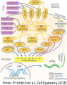
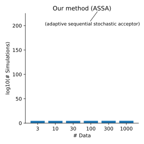

Contributions
Efficient and accurate large-scale ODE inference
Efficient exact ABC with noise
Robust and efficient ABC via inverse ML models
- Schmiester, L.$^∗$, Schälte, Y.$^∗$, Fröhlich, F., Hasenauer, J. and Weindl, D. (2019). Efficient parameterization of large-scale dynamic models based on relative measurements. Bioinformatics, 36(2), pp.594-602.
Efficient exact ABC with noise
- Schälte, Y. and Hasenauer, J. (2020). Efficient exact inference for dynamical systems with noisy measurements using sequential approximate Bayesian computation. Bioinformatics, 36(Supplement 1), pp.i551-i559.
Robust and efficient ABC via inverse ML models
- Schälte, Y., Alamoudi, E. and Hasenauer, J. (2021). Robust adaptive distance functions for approximate Bayesian inference on outlier-corrupted data. bioRxiv.
- Schälte, Y. and Hasenauer, J. (2022). Informative and adaptive distances and summary statistics in approximate Bayesian computation. bioRxiv.
- Schälte, Y., Stapor, P. and Hasenauer, J. (2018). Evaluation of derivative-free optimizers for parameter estimation in systems biology. IFAC-PapersOnLine, 51(19), pp.98-101.
- Schmiester, L.$^∗$, Schälte, Y.$^∗$, et al. (2021). PEtab — Interoperable specification of parameter estimation problems in systems biology. PLoS computational biology, 17(1), p.e1008646.
- Städter, P.$^∗$, Schälte, Y.$^∗$, Schmiester, L.$^∗$, Hasenauer, J. and Stapor, P. (2021). Benchmarking of numerical integration methods for ODE models of biological systems. Scientific reports, 11(1), pp.1-11.
- Fröhlich, F., Weindl, D., Schälte, Y., Pathirana, D., Paszkowski, Ł., Lines, G.T., Stapor, P. and Hasenauer, J. (2021). AMICI: High-Performance Sensitivity Analysis for Large Ordinary Differential Equation Models. Bioinformatics, p.btab227.
Adjoint-hierarchical optimization for large-scale ODE models
ODE model
- Model: $\dot x = f(x, \theta)$, $x(t_0,\theta) = x_0(\theta)$
- Observables: $y = h(x, \theta)$, noise model e.g.: $\bar y = y + \mathcal{N}(0,\sigma^2)$
- Objective: $J(\theta) := - \log\pi(\bar y_\text{obs}|\theta) \overset{!}{\rightarrow}\min_\theta$
We want large-scale models ...
- holistic view on complex reaction networks
- with 1000s of state variables and parameters
- need scalable methods
... but have relative data
- $\bar y = s \cdot \tilde y + b + \mathcal{N}(0,\sigma^2)$
with unscaled observables $\tilde y$ and unknown noise levels $\sigma$
- gives additional parameters
How to efficiently parameterize large-scale ODE models with relative data?
Hierarchical optimization
- Very efficient inner problem
- Simplified outer problem
How to calculate $\nabla_\psi J(\psi,\hat\eta(\psi))$?
How to calculate gradients?
-
$\nabla_\psi J(\psi,\hat\eta(\psi)) \approx
\frac{1}{2}\sum_i\left[\frac{1}{\hat\sigma_i^{2}}\color{blue}{\frac{d\hat\sigma^2_i}{d\psi}}
- \frac{2(\bar y_{\text{obs},i} - (s_i\tilde y_i + b_i))(\hat
s_i\color{red}{\tfrac{d\tilde
y_i}{d\psi}} + \color{blue}{\tfrac{d\hat s_i}{d\psi}}\tilde y_i +
\color{blue}{\tfrac{d\hat
b_i}{d\psi}})}{(\hat\sigma^2_i)^2} - \frac{(\bar y_{\text{obs},i} - (\hat s_i\tilde
y_i
+
\hat
b_i))^2\color{blue}{\tfrac{d\hat\sigma_i^2}{d\psi}}}{(\hat\sigma^2_i)^2}\right]$
with colored terms depending on $\color{red}{\frac{d x}{d\psi}}$ with $\dot x = f(x, \psi)$
ODE gradient calculation methods:
forward: differentiate $\dot x = f$ to calculate $\tfrac{dx}{d\psi}$ $\rightsquigarrow$
$O(n_\psi \cdot n_x)$
adjoint: introduce an adjoint state $\dot p = - \tfrac{\partial f}{\partial
x}^Tp$ to avoid $\tfrac{dx}{d\psi}$
altogether $\rightsquigarrow$ $O(2\cdot n_x)$
Can we use adjoints with hierarchical optimization?
- actually, we calculate $\nabla_\psi J(\psi,\hat\eta(\psi)) = \frac{\partial J}{\partial\psi} + \frac{\partial J}{\partial\eta}\frac{d\hat\eta}{d\psi} = \frac{\partial J}{\partial\psi}$, as $\frac{\partial J}{\partial\eta} = 0$
- thus: can treat $\eta$ as constant in gradient calculation, especially enabling adjoints
- easy to integrate in existing simulation tools
Application

- pan-cancer signaling pathway model
- $\approx 1400$ species, $\approx 4000$ parameters
- observable parameters: up to $\#s=96$, $\#b = 48$, $\#\sigma = 49$
from: Schmiester$^*$, Schälte$^*$ et al., Bioinformatics 2020
- adjoint-hierarchical approach facilitates optimization for large-scale models with relative data
Efficient exact ABC with noise
ABC
likelihood-free approximate Bayesian computation
-
conflicting goals:
- reduce approximation error $\varepsilon$
- keep high acceptance rates
ABC-SMC
combine with a sequential Monte-Carlo scheme


The problem: (biological) data are noisy

What happens when ignoring noise in ABC?
Assume: Model $y\sim \pi(y|\theta)$ does not account for noise.
But: Measurements are noisy, $\bar y_\text{obs} \sim \pi(\bar y|y,\theta)$.
How to account for noise?


“ABC gives exact inference for the wrong model”
Richard Wilkinson, Stat. App. Gen. Mol. Bio. 2013
- noise model permits exact likelihood-free inference
- applicable to any stochastic model and noise model
- parameterized noise model
Problem: Existing methods do not scale in practice
Can we make it more efficient?
-
How to propose parameters?
$\rightsquigarrow$ integrate in SMC via tempering, $\pi(\bar y_\text{obs}|y,\theta)^{\color{red}{1/T_t}}$. -
How to choose the normalization $c$?
$\rightsquigarrow$ based on previous samples, and avoid decapitation via reweighting $\tilde w := \color{red}{\frac{\left(\frac{\pi(\bar y_\text{obs}|y,\theta)}{c_t}\right)^{1/T_t}}{\min\left[\frac{\pi(\bar y_\text{obs}|y,\theta)}{c_t},1\right]^{1/T_t}}}\cdot\frac{\pi(\theta)}{g_t(\theta)}$ -
How to choose the temperatures $T_t$, $t=1,\ldots,n_t$?
$\rightsquigarrow$ predict the acceptance rate $\gamma = \int\left(\int\min\left[\left(\frac{\pi(\bar y_\text{obs} |y,\theta)}{c_{t}}\right)^{1/T},1\right]\pi(y|\theta)\mathop{dy}\right)g_{t}(\theta)\mathop{d\theta}$
(esp. allows choosing $T_1$)


Evaluation
- Applicable to various model and noise model types
- orders of magnitude speed-up
- scales to challenging application problems
Robust and efficient ABC via inverse machine learning models
The problem:
Fitting heterogeneous data
How to account for data informativeness?


- construct low-dimensional summary statistics (see Fearnhead & Prangle, JRSS 2012)
- or: define sensitivity weights via the sensitivity matrix $S = \nabla_{\bar y} s(\bar y_\text{obs})$, $q_{i_y} = \sum_{i_\theta=1}^{n_\theta} \frac{\left|S_{i_yi_\theta}\right|}{ \sum_{j_y=1}^{n_y}\left|S_{j_yi_\theta}\right|}$
- combine with scale normalization and outlier correction via adaptive weighting in an SMC framework
- learn functions of parameters $\lambda(\theta)$ to capture higher-order moments
Evaluation: Simple test model

- only combination of scale normalization, informativeness assessment, and regression target augmentation permits accurate inference
- sensitivity weights give further insights
Evaluation: Agent-based tumor spheroid model 

- can via sensitivity weighting in complex application simultaneously account for informativeness and outliers
Summary
Summary
- exploited the problem structure to facilitate inference for large models with relative data
- handled noise accurately and efficiently
- combined modeling and machine learning to focus on informative data by learning underlying relationships
- substantially improved inference capabilities, overcome limitations, facilitate new applications
Contributions
Efficient and accurate large-scale ODE inference
Efficient exact ABC with noise
Robust and efficient ABC via inverse ML models
- Schmiester, L.$^∗$, Schälte, Y.$^∗$, Fröhlich, F., Hasenauer, J. and Weindl, D. (2019). Efficient parameterization of large-scale dynamic models based on relative measurements. Bioinformatics, 36(2), pp.594-602.
Efficient exact ABC with noise
- Schälte, Y. and Hasenauer, J. (2020). Efficient exact inference for dynamical systems with noisy measurements using sequential approximate Bayesian computation. Bioinformatics, 36(Supplement 1), pp.i551-i559.
Robust and efficient ABC via inverse ML models
- Schälte, Y., Alamoudi, E. and Hasenauer, J. (2021). Robust adaptive distance functions for approximate Bayesian inference on outlier-corrupted data. bioRxiv.
- Schälte, Y. and Hasenauer, J. (2022). Informative and adaptive distances and summary statistics in approximate Bayesian computation. bioRxiv.
- Schälte, Y., Stapor, P. and Hasenauer, J. (2018). Evaluation of derivative-free optimizers for parameter estimation in systems biology. IFAC-PapersOnLine, 51(19), pp.98-101.
- Schmiester, L.$^∗$, Schälte, Y.$^∗$, et al. (2021). PEtab — Interoperable specification of parameter estimation problems in systems biology. PLoS computational biology, 17(1), p.e1008646.
- Städter, P.$^∗$, Schälte, Y.$^∗$, Schmiester, L.$^∗$, Hasenauer, J. and Stapor, P. (2021). Benchmarking of numerical integration methods for ODE models of biological systems. Scientific reports, 11(1), pp.1-11.
- Fröhlich, F., Weindl, D., Schälte, Y., Pathirana, D., Paszkowski, Ł., Lines, G.T., Stapor, P. and Hasenauer, J. (2021). AMICI: High-Performance Sensitivity Analysis for Large Ordinary Differential Equation Models. Bioinformatics, p.btab227.
Further contributions
- Schälte, Y., Klinger, E., Alamoudi, E., and Hasenauer, J. (2022). pyABC: Efficient and robust easy-to-use approximate Bayesian computation. arXiv preprint arXiv:2203.13043.
- Alamoudi, E., Starruß, J., Bundgaard, N., Müller, R., Reck, F., Graw, F., Brusch, L., Hasenauer, J. and Schälte, Y. (2022). Massively parallel likelihood-free parameter inference for biological multi-scale systems. NIC Symposium Proceedings (in submission)
- Olbrich, L.$^∗$, Castelletti, N.$^∗$, Schälte, Y.$^*$, Garí, M.$^∗$, et al. (2021). A Serology Strategy for Epidemiological Studies Based on the Comparison of the Performance of Seven Different Test Systems-The Representative COVID-19 Cohort Munich. medRxiv.
- Olbrich, L.$^*$, Castelletti, N.$^*$, Schälte, Y.$^*$, Garí, M.$^*$, et al. (2021). Head-to-head evaluation of seven different seroassays including direct viral neutralisation in a representative cohort for SARS-CoV-2. The Journal of general virology, 102(10).
- Pritsch, M., ..., Schälte, Y., et al. (2021). Prevalence and risk factors of infection in the representative COVID-19 cohort Munich. International journal of environmental research and public health, 18(7), p.3572.
- Radon, K., ..., Schälte, Y., et al. (2021). From first to second wave: follow-up of the prospective Covid-19 cohort (KoCo19) in Munich (Germany). medRxiv.
- Syga, S., David-Rus, D., Schälte, Y., Hatzikirou, H., and Deutsch, A. (2021). Inferring the effect of interventions on COVID-19 transmission networks. Scientific reports, 11(1), 1-11.
- Durso-Cain, K., Kumberger, P., Schälte, Y., Fink, T., Dahari, H., Hasenauer, J., and Graw, F. (2021). HCV spread kinetics reveal varying contributions of transmission modes to infection dynamics. Viruses, 13(7), 1308.
- Vanhoefer, J., Marta, R., Pathirana, D., Schälte, Y. and Hasenauer, J. (2021). yaml2sbml: Human-readable and-writable specification of ODE models and their conversion to SBML. Journal of Open Source Software, 6(61), p.3215.
- Contento, L., Castelletti, N., Raimúndez, E., Le Gleut, R., Schälte, Y., et al. (2021). Integrative modelling of reported case numbers and seroprevalence reveals time-dependent test efficiency and infection rates. medRxiv.
Software
Acknowledgments
I want to thank:- Jan Hasenauer
- Barbara Kaltenbacher, Elisabeth Ullmann, Michael Stumpf
- my colleagues at ICB and Bonn University
- my co-authors, co-developers, and collaboration partners
- the administrative staff
- everyone I forgot here ... :)
- you